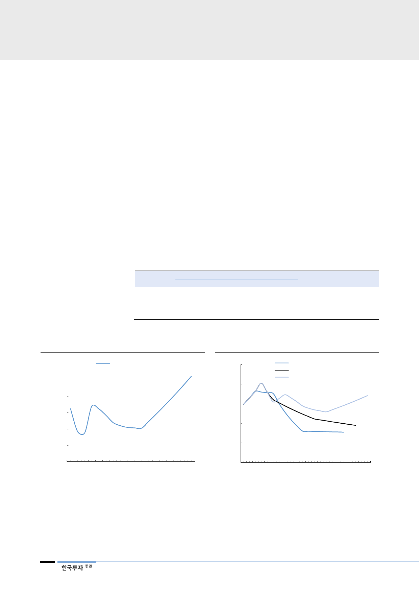

II. 다시 늘어나는 국내 보장이익
우리나라 천연가스 수요
다시 늘어난다
1. 천연가스 수요전망 상향 조정
지난 4월, 2031년까지 15년간 천연가스 수요전망과 수급관리 등을 담은 ‘13차
장기 천연가스수급계획’이 확정됐다. 지난 수급계획 대비 가장 큰 변화는 발전용
천연가스 수요 전망이 다시 늘어나는 방향으로 수정됐다는 것이다. 정부가 예상
한 발전용 천연가스 수요는 올해 1,652만톤(-4.5% YoY)에서 2024년까지는
감소하다가(2019~2024년 CAGR -4.0%), 다시 늘어나기 시작해 2031년까지
1,709만톤으로 증가한다(2025~2031년 CAGR +4.1%). 2년 전 수립한 ‘제12
차 장기천연가스수급계획’에서 정부는 2029년까지 발전용 천연가스 수요가 매년
4.2% 줄어든다고 전망한 바 있다. 도시가스 수요는 미수금 해결에 따른 가격경
쟁력 향상에 따라 매년 1% 성장을 계속한다는 전제하에, 우리나라 천연가스 수
요(도시가스+발전용) 역시 올해 3,646만톤에서 2031년 4,049만톤으로 증가할
것으로 예상했다.
<표 5> 천연가스 수요 전망
2018 년
2024 년
2031 년
연평균증가율
가정/일반용
1,185
1,231
1,329
0.89%
도시가스
산업용
809
886
1,011
1.73%
자료: 13차 장기천연가스수급계획(2018), 한국투자증권
소계
1,994
2,117
2,340
1.24%
발전용
1,652
1,294
1,709
0.26%
(단위: 만톤)
합계
3,646
3,411
4,049
0.81%
[그림 3] 우리나라 천연가스 수요 전망
(천톤)
42,000
정부의 천연가스 수요 전망
40,000
38,000
2025~2031 CAGR +2.5%
36,000
34,000
32,000
2019~2024 CAGR -1.1%
30,000
2014 2016 2018 2020 2022 2024 2026 2028 2030
자료: 13차 장기천연가스수급계획(2018), 한국투자증권
[그림 4] 발전용 천연가스 수요 전망
(천톤)
25,000
20,000
11차(2013)
12차(2015)
13차(2018)
13차 2016~2031 CAGR +2.6%
15,000
10,000
5,000
0
2010 2013 2016 2019 2022 2025 2028 2031
자료: 산업통상자원부, 한국투자증권
4